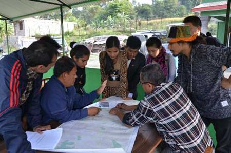

Drs. TANG Wei, ZHANG Jifei and SU Yi from Institute Of Mountain Hazards And Environment,
Chinese Academy of Sciences (IMHE) conducted a nine-day questionnaire survey u
nder the arrangement of Sino-Nepal Joint Research Center for Geography Project and
South Asian Project and completed f
iled visits about settlement environment and farmers’ livelihoods in mountainous area of Central
Development Region in Nepal from Oct.30 to Nov.9, 2014.
Melamchi village
, Dubachaur village, Ichok village and Helambu village, which belong to Melamchi River Basin
were selected as typical samples. A total of 210 questionnaires were collected through the survey.
Questionnaire includes basic information of the households, land use, family income, household
expenditure, assets, living condition, and so on.
|
 |
|
Selection and allocation of survey sites (by IMHE) |
Results showed that, different types of the households have different livelihood strategies,
combination and income, so introducing and expanding non-agricultural activities is the development trend
for local livelihoods strategies.
The survey also finds out that with the altitude increasing, settlement environment and
livelihoods of farmers showed a greater difference. And respecting to the high mountain region,
settlements in valley region have a relative good environment and more diverse livelihoods. In addition,
adverse natural environment, social and economic conditions as well as farmers' own quality have
combined effects on the sustainable development of the livelihoods and land use.
Through this investigation, the research group preliminary mastered the settlement
environmental characteristics and the livelihood strategies of different types of householdsin Nepal
mountains, which provides the basis data for exploring the impacts of different
settlement environment
on households livelihood strategies and the adaptation of the livelihood strategies for
settlement environment.
The survey received great help from the Department of Geography of Tribhuvan
University of Nepal.